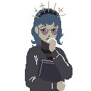
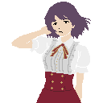
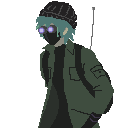
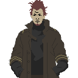

Agatha (Location: Vanity)
A timid Queen. She tries to soften Sabrina's effects on Neighborhood's citizenry.
Devin (Location: Vanity)
A selfish King. He craves information and will aquire it by all means necessary.

Maxwell (Location: Vanity)
A miserable King. He shares great knowledge but only with like-minded persons.

Mildred (Location: Vanity)
A devious Queen with endless knowledge in all things. She respects malice.

Porter (Location: Vanity)
A proud King. He takes great caution with all his words and doings.

Sabrina (Location: Vanity)
A vindictive Queen. She has no mercy for wrong-doing.
Mirjana (Location: Ossuary)
A gloomy girl tasked with managing the records and mainting Ossuary. She commands the overseers.
Nadja (Location: Helotry)
A witty bar owner. She has connections to an underground military force who seeks to overtake Neighborhood's command if Vanity oversteps its bounds on Helotry's sovereignty.
Ruslan (Location: Miasma)
A resourceful and quirky machinist. Provides useful items if you have (O2) to trade.

Vallen (Location: Antimony)
A street criminal that provides remedies and guidances, albeit risky medicine and advice.

Morgan (Location: Haulm)
A kindhearted woman who provides remedies and guidance.
Stas (Location: Haulm - H.R.S. Alexandria)
A warmhearted admiral in control of Haulm's defenses.